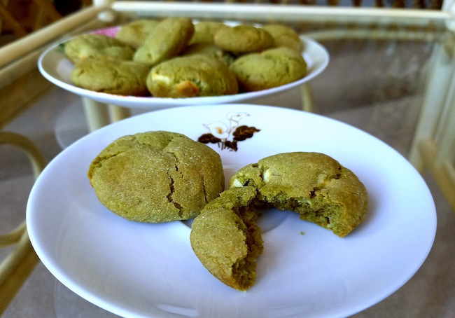

Matcha Cookies
Ingredients:
-
150g of Vegan Butter or margarine (room-temperature, softened)
-
1 tbsp of Matcha Powder (no heep)
-
1/4 Cup of Brown Sugar
-
1/4 Cup of Caster Sugar,
-
1/4 Cup of Caster Sugar for Coating (later)
-
1 tsp of Vanilla Extract
-
2 Cups of Plain Flour
-
1/2 tsp of Baking Soda
-
1 tsp of Baking Powder (no heep)
-
1 tbsp of Greek Yogurt or Sour Cream
-
70g of White Chocolate Chips
-
1/4 tsp of Salt
-
1 Flax Egg

Method:
-
Cream together room-temperature vegan butter, yogurt, sugar and matcha powder until smooth with a whisk. Add the flax egg and vanilla extract and mix until smooth.
-
Sift in flour, baking soda, baking powder and salt and mix until a dough forms with a spatula or by hand.
-
Add the white chocolate chips to the mixture and mix in to make it even throughout the dough.
-
Chill the dough for 30 minutes in the fridge and then preheat oven.
-
Roll tablespoon amounts of dough between your palms to form a ball, then roll in sugar and place on a baking tray covered with parchment paper (you can put them in muffin tins to be exact with the size and keep a nice shape to them). Repeat with remaining dough.
-
Bake for 12-14 minutes, or until the bottoms begin to slightly brown and then let them cool.